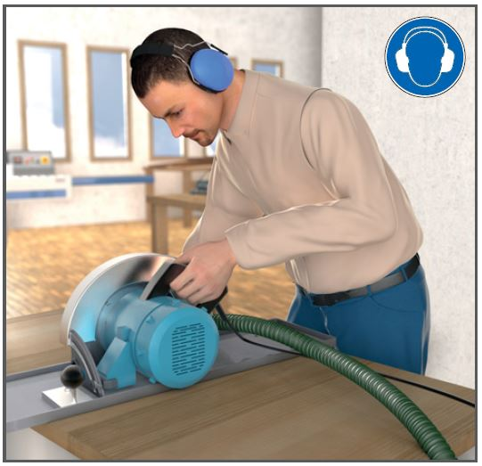
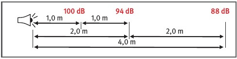
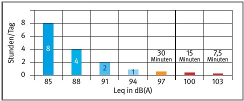

Gefährdungen
- Andauernde Einwirkung von Lärm verursacht langfristig Gehörschäden. Bereits ein kurzer
aber intensiver Schallimpuls kann zum unmittelbaren Hörverlust führen.
- Lärm verursacht Stress, führt zur Erhöhung von Blutdruck und zu Schlafstörungen und ist Mitursache von Herzinfarkten.
Allgemeines
- Lärm sind störende Geräusche und Töne. Als messbaren Schall bezeichnet man mechanische Wellen und Schwingungen die sich in festen, flüssigen oder gasförmigen Stoffen ausbreiten und frequenzabhängig auf den Menschen wirken.
- Die Frequenz (f), ist die Anzahl der Schwingungen pro Sekunde und wird in der Einheit Hertz (Hz), gemessen. Der hörbare Frequenzbereich liegt zwischen 16 Hz und 16.000 Hz.
- Die A-Frequenzbewertung ist annähernd an die Hörempfindung des Menschen angepasst und ist als Filter zu verstehen. Die C-Frequenzbewertung ist dem unbewerteten Schallpegel nahe. Im Arbeitsschutz kommen die Frequenzbewertungen A und C, also dB(A) und dB(C) zum Einsatz.
- Der Schalldruckpegel ist der an einem Punkt im Raum (vor Ort) messbare Schallpegel Lp in dB(A). Der Hörbereich des Menschen reicht von der Hörschwelle (= 0 dB) bis zur Schmerzschwelle (= 120 dB).
- Der Schallleistungspegel LWA ist die für eine Schallquelle kennzeichnende schalltechnische Größe und ist weder abhängig vom Raum noch vom Abstand.
- Die Schallleistung beschreibt die Gesamtleistung (tatsächliche Schallenergie), die von einer Schallquelle abgegeben wird. Die Fußnote A kennzeichnet die A-Bewertung.
- Die Schallpegelerhöhung von zwei gleich lauten Schallquellen beträgt 3 dB und stellt eine Verdopplung der Gefährdung dar, obwohl die Erhöhung kaum wahrnehmbar ist. Eine Erhöhung des Schallpegels um 10 dB wird als doppelt so laut empfunden.
- Der Tages-Lärmexpositionspegel LEX,8h ist die durchschnittliche Lärmbelastung für eine 8-Stunden-Schicht. Der Spitzenschalldruckpegel LpC,peak ist der Höchstwert des momentanen Schalldruckpegels.
Auslösewerte
Untere Auslösewerte:
Tages-Lärmexpositionspegel
LEX,8h = 80 dB (A)
Spitzenschalldruckpegel
LpC,peak = 135 dB (C)
Obere Auslösewerte:
Tages-Lärmexpositionspegel
LEX,8h = 85 dB (A)
Spitzenschalldruckpegel
LpC,peak = 137 dB (C)
Schutzmaßnahmen
- Nach Feststellung einer möglichen Gefährdung durch Lärm sind die Gefährdung zu beurteilen und Maßnahmen zu bestimmen.
- Lärmexpositionen, deren Werte nicht bekannt sind, sind messtechnisch zu ermitteln. Arbeitsplatzbezogene Schallmessungen sind mit dem energieäquivalenten Dauerschallpegel Leq und dem A-Filter durchzuführen; Einheit = dB(A). Impulsschallereignisse (Knalle) sind als Spitzenschalldruckpegel LpC,peak mit dem C-Filter zu messen; Einheit = dB(C).
- Lärmminderungsprogramm: technische Maßnahmen sind vor organisatorischen Maßnahmen und vor persönlichen Maßnahmen (Gehörschutz) einzuleiten. Das Lärmminderungsprogramm ist hinsichtlich seiner Umsetzung und Wirksamkeit regelmäßig zu überprüfen.
- Auswahl alternativer lärmarmer Arbeitsmittel und Arbeitsverfahren.
- Lärmmindernde Gestaltung und Einrichtung von Arbeitsstätten und Arbeitsplätzen.
- Kennzeichnung von Lärmbereichen.
- Einweisung und Unterweisung von Beschäftigten:
- Erarbeitung von Arbeitszeitregelungen für die Beschäftigten,
- Koordination betroffener Arbeitsplätze,
- Berücksichtigung des Abstands von der Schallquelle,
- Bestimmung der maximalen Aufenthaltsdauer in Lärmbereichen.
- Auswahl von geeignetem Gehörschutz.
- Auswahl von geeignetem Gehörschutz für Beschäftigte mit einer Hörminderung.
Zusätzliche Hinweise
- Schallausbreitung im Freien ist zu differenzieren von Schallausbreitung in Gebäuden (Reflexionsschall). In Gebäuden (z. B. Rohbau, Ausbau) sind Schallpegelüberhöhungen von bis zu 8 dB(A) anzunehmen.
Arbeitsmedizinische Vorsorge
- Arbeitsmedizinische Vorsorge nach Ergebnis der Gefährdungsbeurteilung veranlassen (Pflichtvorsorge) oder anbieten (Angebotsvorsorge). Hierzu Beratung durch den Betriebsarzt.
Beschäftigungseinschränkung
- Schwangere Beschäftigte dürfen ab einem Tageslärmexpositionspegel > 80 dB(A) nicht mehr beschäftigt werden.
Pegelminderung pro Abstandsverdopplung im Freien

Maximale Aufenthaltsdauer ohne Gehörschutz

07/2021